ВЕДОМСТВЕННЫЕ СТРОИТЕЛЬНЫЕ НОРМЫ
ПРОЕКТИРОВАНИЕ
МОРСКИХ
ПОДВОДНЫХ НЕФТЕГАЗОПРОВОДОВ
ВСН 51-9-86
МИНГАЗПРОМ
Москва 1987
|
Министерство газовой промышленности |
Ведомственные строительные нормы Проектирование морских подводных трубопроводов |
ВСН Впервые |
Настоящие нормы распространяются на проектирование подводных нефтегазопроводов морских, нефтяных, газовых и газоконденсатных месторождений, переходов нефтегазопроводов через морские преграды, нефтепродуктов безпричального налива и рейдовых причалов условным диаметром до 600 мм включительно с избыточным давлением транспортируемого продукта до 10 МПа во всех климатических зонах.
Нормы устанавливают требования при проектировании новых трубопроводов и реконструкции действующих подводных нефтегазопроводов.
Нормы соответствуют требованиям СНиП 2.05.06-85.
Термины и определения по ОСТ 51.89-82.
|
Внесены |
Утверждены |
Срок введения в действие 1 апреля 1987 г. |
1.1. Под морскими подводными нефтегазопроводами следует понимать трубопроводы, прокладываемые по дну моря и предназначенные для:
сбора и транспортировки, газового конденсата, природного и попутного газа и смесей этих продуктов с морских нефтяных, газовых и газоконденсатных месторождений;
подачи нефти и нефтепродуктов как на рейдовые причалы и безпричальный налив, так и в обратном направлении - с этих сооружений на берег;
транспорта нефти, нефтепродуктов и газа через морские преграды.
1.2. При проектировании морских подводных нефтепроводов, предназначенных для транспортирования продукции, оказывающей коррозионное воздействие на металл, сварные соединения труб и арматуру, установленную на нефтегазопроводе, необходимо предусматривать мероприятия, обеспечивающие защиту нефтегазопроводов от коррозионного воздействия или сероводородного растрескивания.
1.3. В состав линейной части морского подводного нефтегазопровода, в общем случае, входят:
трубопровод с противокоррозионным и утяжеляющим покрытием (или грузами);
стояк (стояки) - конструкция из труб, присоединяемая к трубопроводу и выводящая последний на гидротехническое сооружение;
линейная запорная (отсекающая) арматура;
установки электрохимической защиты;
сооружения электроснабжения управлений линейной арматурой и электрохимической (катодной) защиты.
2.1. Морские подводные нефтегазопроводы в зависимости от характера транспортируемой продукции подразделяются на нефтепроводы и газопроводы.
2.2. К нефтепроводам относятся трубопроводы, предназначенные для транспорта сырой нефти, ее продуктов и стабильного газового конденсата.
2.3. К газопроводам относятся трубопроводы, предназначенные для транспорта природного и попутного (нефтяного) газа, нестабильного газового конденсата и неразгазированной нефти.
2.4. По назначению подводные нефтепродукты и газопроводы подразделяются на магистральные и промысловые.
2.7 Под промысловыми нефтегазопроводами понимаются трубопроводы между промысловыми гидротехническими сооружениями, предназначенные для транспорта продукции, указанной в п.п. 2.5, 2.6, a также трубопроводы для транспорта нефти и ее продуктов на рейдовые причалы и сооружения беспричального налива.
2.8. Магистральные нефтепроводы и нефтепродуктопроводы в зависимости от диаметра трубопровода подразделяются на три класса:
I - класс при условном диаметре от 500 до 800 мм включительно
II - класс -»- ниже 500 до 300 мм включительно
III - класс -»- менее 300 мм.
2.9. Магистральные газопроводы в зависимости от давления подразделяются на два класса:
I - класс при рабочем давлении от 2,5 МПа (25 кгс/см2) до 10 МПа (100 кгс/см2) включительно.
II - класс при рабочем давлении до 2,5 МПа (25 кгс/м2) включительно.
2.10. Промысловые нефтегазопроводы в зависимости от диаметра подразделяются на 3 класса:
I класс - нефтегазопроводы условным диаметром свыше 500 до 800 мм;
II класс -»- от 500 до 300 мм включительно;
III класс -»- менее 300 мм.
2.11. Нефтегазопроводы в зависимости от технологии их укладки подразделяются на две группы:
I - группа - нефтегазопроводы монтируются из отдельных секций, изготовляемых на монтажно-сборочных площадках на берегу;
II - группа - нефтегазопроводы которые монтируются последовательным наращиванием труб (секций) с плавсредства.
2.12. Морские подводные нефтегазопроводы независимо от акватории, на которой они прокладываются относятся к высшей категории по СНиП 2.05.06-85 с коэффициентом условий работы при расчете на прочность В = 0,6 и 100 % - контролем сварных стыков радиографическим методом.
2.13. Величина предварительного гидравлического испытания на прочность каждой секции нефтегазопровода I группы Рисп. = 1,5 Рраб. Продолжительность испытания - 3 часа, величина испытательного давления трубопровода на прочность - 1,25 Рраб.
2.14. Величина предварительного гидравлического испытания каждой штучной трубы нефтегазопровода II группы Рисп. = 1,5 Рраб., время испытания 60 с.
Величина испытательного давления трубопровода на прочность 1,25 Рраб. Продолжительность испытания 12 часов.
После предварительного испытания каждая труба должна быть проверена ультразвуковой дефектоскопией.
2.15. Величина испытательного давления, как правило, не должна превосходить величину испытательного давления, установленную для данных труб на заводе-изготовителе.
При испытании секций нефтегазопровода на сварочно-монтажной площадке допускается повышение предварительного испытательного давления на величину, вызывающую напряжения в металле труб, равные 0,9 - 0,95 предела текучести.
3.1. Выбор трассы подводного нефтегазопровода должен производиться из условия обеспечения его эксплуатационной надежности и минимальных приведенных затрат на строительство и эксплуатацию.
3.2. Выбор трассы подводного нефтегазопровода следует производить по навигационным картам с последующим уточнением его по результатам инженерных изысканий.
3.3. Ширина полосы инженерных изысканий, их состав, объем и технические требования к ним устанавливаются проектом в соответствии с ВСН 51.2-84 Мингазпрома в зависимости от метода укладки, глубины моря, скорости морского течения, числа ниток и других факторов.
3.4. Трассу нефтегазопровода, как правило, следует проектировать прямолинейно, в местах поворота - по радиусу упругого изгиба.
3.5. При выборе трассы необходимо учитывать существующие, строящиеся, проектируемые гидротехнические сооружения и инженерные коммуникации, а также перспективы развития гидротехнического строительства в районе прокладки нефтегазопровода на ближайшие 5 - 20 лет.
Участки дна с сильно пересеченным рельефом, выходами скальных гряд, газовыми проявлениями, возможными проявлениями грязевых вулканов, с донными льдами большой мощности, участки дна с воздействием на них плавающего льда, следует обходить.
В замерзающих морях следует учитывать состояние морского льда (наличие припайного льда, дрейфа, степень ледовитости, наличие айсбергов, каналов во льдах, ледяного барьера, торосов, подторосов, прибрежного навала, ледяных стенок, шельфового ледника, донного льда, стамух, вечной мерзлоты).
3.6. Трассу следует выбирать на участках с полыньями, каналами, пологим дном, где отсутствуют торосы и другие ледовые препятствия.
3.7. Возмещение возможных убытков рыбному хозяйству, связанных со строительством подводных нефтегазопроводов, следует определять в установленном порядке.
3.8. При прохождении трассы магистрального нефтегазопровода в районе расположения гидротехнического сооружения минимальное расстояние от нефтегазопровода до сооружения следует принимать по таблице 1.
3.9. Расстояние между действующими и вновь сооружаемыми, а также расстояния между одновременно прокладываемыми параллельными нитками нефтегазопроводов следует принимать минимальным, исходя из условий производства работ по его укладке, заглублению, глубины моря, схемы электрохимической защиты и возможности выполнения ремонтных работ.
3.10. В проекте должно быть указано расстояние схождения (расхождения) параллельных ниток нефтегазопроводов.
3.11. Магистральные нефтегазопроводы на всем протяжении должны предусматривать параллельность прохождения трассы по отношению к уже проложенным трубопроводам.
3.12. Минимальное расстояние от оси вышедшего на берег магистрального нефтегазопровода до населенного пункта, промышленного предприятия, отдельного здания и сооружения, а также компрессорных, газораспределительных и насосных станций (охранная зона) должны приниматься по СНиП 2.05.06-85.
3.13. Для проезда к месту выхода нефтегазопровода на берег должны быть максимально использованы следующие дороги.
Строительство новых дорог и дорожных сооружений следует предусматривать только при невозможности проезда к месту выхода нефтегазопровода на берег.
3.14. Запрещается предусматривать прокладку нефтегазопровода под гидротехническими сооружениями за исключением эстакады.
3.15. При соответствующем обосновании и предусмотрении мер безопасности допускается прокладка подводных нефтегазопроводов под эстакадой. При этом нефтегазопровод должен проходить по середине пролета эстакады под углом не менее 75° к его оси. Меры безопасности устанавливаются проектом.
Таблица 1
Расстояние от нефтегазопроводов до сооружения в М
|
Объекты, расположенные на стационарных платформах или приэстакадных площадках |
Магистральные газопроводы |
Магистральные нефтепроводы и продуктопроводы |
||||||
|
класса |
||||||||
|
I |
II |
III |
II |
I |
||||
|
Условным диаметром, мм |
||||||||
|
300 и менее |
св. 300 до 600 |
св. 600 до 800 |
300 и менее |
св. 300 |
300 и менее |
св. 300 до 500 |
св. 500 до 800 |
|
|
1. Устья бурящихся и эксплуатируемых скважин |
||||||||
|
2. Нефтеперекачивающие станции, газораспределительные станции, установки комплексной подготовки нефти и газа сборные пункты промыслов, установки очистки и осушки газа |
75 |
125 |
150 |
75 |
125 |
30 |
30 |
50 |
|
3. Газораспределительные станция, в том числе и шкафного типа для обеспечения газом предприятий, отдельных зданий и других потребителей |
50 |
75 |
100 |
50 |
75 |
20 |
20 |
30 |
|
4. Воздушная ЛЭП |
не менее высоты опоры (считая от дна) плюс 10 м |
|||||||
Примечания: 1. Расстояния, указанные в таблице следует принимать от края гидротехнического сооружения.
2. В особых условиях, при соответствующем обосновании допускается сокращать указанные в таблице расстояния, но не более чем на 20 %.
3. Во всех случаях расстояния, указанные в таблице, должны быть не менее высоты сооружения (считая от дна) плюс не менее 10 м.
4. Расстояние до объектов, отсутствующих в настоящей таблице, следует принимать по согласованию с соответствующими органами Государственного надзора и заинтересованными организациями.
3.16. Допускается взаимное пересечение подводных нефтегазопроводов, а также пересечение подводных нефтегазопроводов другими подводными инженерными коммуникациями при условии принятия соответствующих мер безопасности. Пересечение следует проектировать под углом не менее 60°. Условия пересечения и меры безопасности определяются проектом.
4.1. Нефтегазопроводы следует прокладывать непосредственно по дну моря (незаглубленный нефтегазопровод) и ниже естественной поверхности дна (заглубленный нефтегазопровод).
4.3. Вес в воде незаглубленного нефтегазопровода в состоянии эксплуатации должен обеспечивать устойчивое положение на дне моря против всплытия и перемещения под действием волн и донных течений.
4.4. Вес в воде заглубленного нефтегазопровода в состоянии эксплуатации должен обеспечивать погружение состояния нефтегазопровода в траншее.
Для этого следует соблюсти условие: вес нефтегазопровода со всеми конструкциями и без продукта в воде (при температуре эксплуатации) должен быть больше выталкивающей силы воды, для труб Æ 400 мм не менее чем на 5 % и для труб Æ 400 мм не менее 10 %.
4.5. Выталкивающая сила воды, приходящаяся на единицу длины полностью погруженного в воду нефтегазопровода при отсутствии волнения и течения, определяется по формуле:
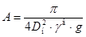
где: Dн - наружный диаметр трубы с учетом изоляционного и утяжеляющего покрытия, м;
γв - плотность морской воды с учетом растворимых в ней частиц грунта, кг/см3;
g - ускорение свободного падения, = 9,81 м/с2.
4.6. Обратная засыпка траншеи при расчете нефтегазопровода на всплытие не должна учитываться.
4.7. Возможность осадки нефтегазопровода должна рассматриваться исходя из предложений, что нефтегазопровод заполнен водой, в возможность всплытия - заполнен газом.
4.8. Проектная величина заглубления устанавливается на основании инженерных изысканий с учетом возможных переформирований дна моря и берега по трассе, типа якорей и должна обеспечивать защиту труб от повреждений и размыва в течение проектного срока службы нефтегазопровода.
4.9. Проектная отметка верха заглубленного нефтегазопровода (по утяжеляющему покрытию, грузу), отсчитанная от минимальной отметки, которую может принять дно моря по трассе в процессе переформирования за время проектного срока службы нефтегазопровода после завершения строительства, должна назначаться на 1 м ниже глубины размыва дна акватории или берегового участка, пропахивания (борозды) от воздействия льда на дно, внедрения на дно моря якоря (траловой доски).
В случаях, когда дно моря сложено твердыми породами заглубление нефтегазопровода принимается не менее 0,5 м, считая от дна водоема до верха утяжеляющего покрытия (груза) нефтегазопровода.
4.10. Способ заглубления нефтегазопровода следует принимать в зависимости от условий района прокладки, объема и темпов работ, категории разрабатываемых грунтов, глубины акватории, диаметра нефтегазопровода и величины заглубления в грунт.
4.11. На незамерзающих акваториях, когда технически трудно заглубить нефтегазопровод в донный грунт в прибойной и приурезовых зонах, решение о прокладке нефтегазопровода незаглубленным методом должно быть надлежащим образом обосновано. При этом нефтегазопровод должен быть защищен сплошным бетонным или другим прочным покрытием, весом в воде, достаточным для обеспечения прилегания нефтегазопровода к перформирующемуся рельефу дна и устойчивого положения против всплытия и перемещения под действием волн и донных течений.
4.12. На участках трассы, указанных в п. 4.2, на которых дно моря сложено твердыми породами и нет опасения повреждения нефтегазопровода льдами. Разрешается укладка незаглубленного нефтегазопровода. При этом необходимо предусмотреть мероприятия по защите нефтегазопровода от волновых нагрузок и повреждения якорями и траловыми досками.
4.13. На участках трассы, где исключено воздействие льдов на сваи и нефтегазопроводов, допускается крепление к сваям нефтегазопровода (подводным) с целью обеспечения устойчивости от перемещений в горизонтальном направлении под действием волн и донных течений. При этом должна быть обеспечена возможность перемещения нефтегазопровода относительно сваи дна.
4.14. При значительных переформированиях профиля дна на подходах нефтегазопровода к берегу и невозможности его заглубления на незамерзающих акваториях, разрешается прокладка нефтегазопровода в надводном положении на сваях с использованием несущей способности труб. Расстояние от низа трубы до расчетного уровня, принятом при определении элементов волн по СНиП 2.06.04-82 для расчета волновых нагрузок на нефтегазопровод, должно быть не менее 2/3 высоты волны обеспеченностью 5 %.
4.15. На участках трассы, где дно моря представлено вечной мерзлотой, должно быть исключено отмораживание дна теплом продуктов перекачки.
4.16. При сложных геологических и ледовых условиях разрешается нефтегазопровод прокладывать в специально возводимых насыпях, гравийно-песчаных или из других устойчивых элементов. Конструкция насыпи определяется проектом.
4.17. При выходе нефтегазопровода на берег в районе со слабыми грунтами, легко подвергающимися эрозии от воздействия волн, течений, льдов может быть предусмотрен тоннельный метод. Тоннель для прокладки нефтегазопровода следует проводить на глубине не менее 5 м. Ниже эрозионно-разрушаемой отметки, полученной по данным наблюдений и расчетов. Шахту для сооружения тоннеля следует располагать на суше за границей прибрежного навала льда или торосов.
4.18. Состояние берега в створе нефтегазопровода должно быть отражено в проекте и, в случае необходимости, разработаны мероприятия по его укреплению.
4.19. На берегу в месте выхода нефтегазопровода на берег следует предусматривать опознавательный знак.
4.20. Нефтегазопроводы следует проектировать на основании инженерных изысканий с учетом условий эксплуатации ранее построенных в районе строительства подводных и надводных сооружений и коммуникаций.
4.21. В проекте должны быть указаны условия окружающей среды, при которых допускается производство работ по укладке нефтегазопровода.
4.22. Запорную арматуру на нефтегазопроводе на берегу незамерзающих и замерзающих акваторий следует устанавливать за пределами границы накатывания волн на берег при расчетном уровне воды, принятом при определении элементов волн по СНиП 2.06.04-82 для расчета волновой нагрузки, но не ближе границы выноса торосов в замерзающих поверхностях.
4.23. Место установки арматуры на нефтегазопроводе на гидротехническом сооружении устанавливается проектом.
4.24. Границами подводного нефтегазопровода, определяющими его длину являются:
- стояки у гидротехнических сооружений для нефтегазопроводов, прокладываемых между ними;
- стояк у гидротехнического сооружения и линия в 10 м от границы накатывания волн на берег или выноса торосов по п. 4.21 для нефтегазопровода, выходящего на берег.
5.1. Диаметр морского подводного нефтегазопровода должен определяться гидравлическим расчетом в соответствии с нормами технологического проектирования.
5.2. Толщина стенки нефтегазопровода принимается по расчету, приведенному в 7 разделе настоящих норм.
5.3. В случаях, когда суммарные напряжения при укладке нефтегазопровода превышает 0,85 разрешается, при соответствующем обосновании толщину стенки нефтегазопровода принимать исходя из условия его укладки.
5.4. Нефтегазопроводы следует проектировать сварными в стык с установкой на них на гидротехнических сооружениях и на берегу стальной арматуры (краны, задвижки, узлы запуска и приема поршней и т.д.), рассчитанной на эксплуатационное давление в нефтегазопроводе. Сечение арматуры устанавливается проектом.
5.5. Применяемые для морских подводных нефтегазопроводов трубы, арматура, соединительные детали, сварочные и изоляционные материалы должны отвечать требованиям, изложенным в разделе 12, действующим стандартам и техническим условиям.
5.6. При выполнении подводных работ разрешается стыковку нефтегазопродуктов осуществлять механическим способом. Герметичность и надежность механического соединения должна быть не ниже герметичности, надежности сварного соединения (стыка).
5.7. Разрешается применять гибкие трубопроводы в случаях, когда технологическая схема обустройства морского промысла (скважины) вмешает трудности строительства трубопроводов из стальных труб. Несущая способность, долговечность ремонтно-пригодность гибких нефтегазопроводов должна быть не ниже стальных.
5.8. Однотрубный нефтегазопровод в общем случае состоит из труб, противокоррозионного покрытия, защитного покрытия и утяжеляющих грузов. При выполнении защитного покрытия из бетона, ж/бетона или обладающего соответствующей плотностью другого прочного материала, защитное покрытие одновременно должно являться и утяжеляющим.
5.9. При соответствующем обосновании, с целью повышения эксплуатационной надежности или для других целей разрешается нефтегазопровод проектировать двухтрубный конструкции типа «труба в трубе».
При этом нефтегазопровод двухтрубной конструкции может быть как на всем протяжении трассы, так и на отдельных ее участках.
5.10. Допустимые радиусы изгиба нефтегазопровода в горизонтальной и вертикальной плоскостях должны определяться расчетом из условия прочности и устойчивости стенки трубы, а также устойчивости положения трубопровода под воздействием волн и донных течений, внутреннего давления и собственного веса в воде. Минимальный радиус изгиба трубопровода из условия прохождения очистных устройств должен составлять не менее пяти его диаметров.
5.11. Длина патрубков (прямых вставок) привариваемых к морским нефтегазопроводам и к стоякам на гидротехнических сооружениях должна быть не менее 250 мм.
5.12. Необходимость установки на нефтегазопроводе узлов пуска и приема очистных, а также разделительных устройств и их конструкция определяется проектом.
5.13. При установке на нефтегазопроводе узлов пуска и приема очистных и разделительных устройств, нефтегазопровод на берегу и узлы пуска и приема очистных устройств на берегу и гидротехническом сооружении должны быть оборудованы сигнальными приборами, регистрирующими прохождение очистных устройств.
5.14. В местах примыкания подводного нефтегазопровода к технологическим сооружениям на берегу необходимо определять величину возможных продольных перемещений примыкающего участка подводного нефтегазопровода от воздействия внутреннего давления, изменения температуры металла труб и возможного подмыва нефтегазопровода на прибрежном участке. Величина продольных перемещений, как воздействие, должна учитываться при расчете конструктивных элементов, присоединяющих подводный нефтегазопровод к технологическим сооружениям. С целью уменьшения продольных перемещений прибрежного участка нефтегазопровода следует предусматривать специальные мероприятия, в том числе установку открытых компенсаторов П, Z и Г-образных и других форм.
6.1. Линейная часть нефтегазопровода должна выходить на гидротехническое сооружение стояком, расположенным, как правило, параллельно боковой грани сооружения.
6.2. Стояки изготавливаются из тех же труб, что и линейная часть трубопровода.
При соответствующем обосновании для изготовления стояков допускается применение труб повышенной толщины стенки.
С целью увеличения надежности стояка в зоне периодического смачивания допускается применение в этой зоне конструкции стояка типа «труба в трубе».
Разрешается изготавливать стояки из гибких трубопроводов по п. 5.7.
6.3. Конструкция соединения стояка с трубопроводом устанавливается проектом.
6.4. Трубы (секция труб), предназначенные для изготовления стояка до их монтажа должны быть испытаны на полуторократное расчетное эксплуатационное давление.
После монтажа стояк испытывается вместе с линейной частью трубопровода.
6.5. Стояки устанавливаются у гидротехнических сооружений, как правило, со стороны, свободной от причала судов.
При соответствующем обосновании допускается установка стояков со стороны причальных площадок. При этом должны быть предусмотрены меры, предотвращающие повреждение стояков судами.
6.6. В замерзающих акваториях стояки должны проектироваться защищенными от воздействия льда.
6.7. Стояки, как правило, крепятся к металлоконструкциям гидротехнических сооружений опорами. Конструкция опоры устанавливается проектом.
Приварка опор к стоякам однотрубной конструкции не допускается.
Количество опор определяется по табл. 2.
6.8. Минимальное расстояние между параллельными стояками устанавливается исходя из условия производства ремонтных работ, но не менее 0,8 м в свету.
Таблица 2
|
Количество опор |
Надводных опор |
Подводных опор |
Расстояние между опорами не более, м |
|
|
Менее 10 м |
3 |
2 |
1 |
|
|
до 30 м |
4 |
2 |
2 |
≥ 16 |
|
до 50 м |
5 |
2 |
3 |
≥ 21 |
|
более 50 м |
≥ 25 |
Примечание. Во всех случаях незащищенный стояк следует крепить к гидротехническому сооружению: перед площадкой (палубой), на которую он выходит, на высоте 1,5 - 2 м от расчетного уровня воды, принятом при определении элементов волн и у дна.
7.1. Изложенные в настоящем разделе положения по расчету распространяются на нефтегазопроводы, транспортирующие продукты, не изменяющие механические свойства металла труб и сварных соединений.
7.2. Расчетом определяются толщина стенки труб и соединительных деталей.
7.3. При расчете нефтегазопроводов принимаются следующие физические характеристики трубных сталей:
+ плотность γ = 7850 кг/м3
+ модуль упругости Е = 2,06×105 МПа
коэффициент Пуассона μ = 0,3
коэффициент линейного расширения α = 0,000012 град-1.
7.4. Сварные соединения должны быть равнопрочны основному металлу труб.
7.5. Толщину стенки нефтегазопровода расчетную d см, следует определять по формуле:
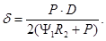
7.6. При наличии продольных осевых сжимающих напряжений толщину стенки следует определять из условия:
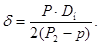
где: Dн - наружный диаметр труб, см
Р - расчетное рабочее давление в нефтегазопроводе, МПа, определяемое согласно (7.3)
R2 - расчетное сопротивление, определяемое согласно формуле (7.4), МПа.
Р = П Рэкс - Рв (7.3)
Рэкс - расчетное эксплуатационное давление нефтегазопровода, МПа
Рв - давление воды на глубине нефтегазопровода, МПа
п - коэффициент надежности по нагрузке - эксплуатационному давлению, принимаемый по табл. 3.
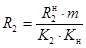
R2н - нормативное сопротивление растяжению (сжатию) металла труб и сварных соединений, принимается равным минимальному значению предела текучести по государственным стандартам и техническим условиям на трубы.
m - коэффициент условия работы, принимаемый по п. 2.12
К2 - коэффициент надежности по материалу, принимаемый по табл. 4.
Кн - коэффициент надежности, принимаемый по табл. 5.
y1 - коэффициент, учитывающий двухосное напряженное состояние металла труб; при растягивающих продольных напряжениях y1 = 1.
7.7. Коэффициент y, учитывающий двухосное напряженное состояние труб при сжимающих продольных напряжениях определяется по формуле:
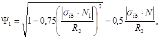
где: σпр · N - абсолютное значение продольных (осевых) сжимающих напряжений, МПа, от расчетных нагрузок.
Продольные напряжения от воздействия температуры и внутреннего давления для прямолинейного участка трубопровода определяются по формуле:
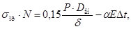
где: Dвн - внутренний диаметр трубы, см
α - коэффициент линейного расширения металла трубы, град-1
E - модуль упругости металла, МПа
Δt - расчетный температурный перепад между температурой металла труб при укладке и в процессе эксплуатации, принимаемый положительным при нагревании.
7.8. Проверку прочности заглубленных и незаглубленных подводных нефтегазопроводов следует производить из условия:
σпрN ≤ y2R2, (7.7)
где: σпрN - продольное осевое напряжение от расчетных нагрузок и воздействий, МПа, определяемое согласно (7.6)
R2 - расчетное сопротивление, определяемое согласно (7.4)
y2 - коэффициент, учитывающий двухосное напряженное состояние металла труб, при растягивающих осевых продольных напряжениях y2 = 1.
7.9. Коэффициент y2, учитывающий двухосное напряженное состояние металла труб при сжимающих продольных напряжениях определяется по формуле:
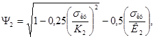
где: σкц - кольцевые напряжения от расчетного внутреннего давления МПа, определяемые по формуле:
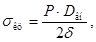
Dвн - внутренний диаметр труб, см
d - номинальная толщина стенки, см
Р - расчетное рабочее давление в нефтегазопроводе МПа, определяемое согласно (7.3)
7.10. Проверку деформаций заглубленных и незаглубленных подводных нефтегазопроводов следует производить из условий:
σнпр ≤ y · С · Кн · Rн (7.10)
σнкц ≤ С · Кн · Rн2, (7.11)
где: σнпр - максимальные суммарные продольные напряжения в нефтегазопроводе от нормативных нагрузок и воздействий, определяемые согласно (7.13), МПа
σнкц - кольцевые напряжения от расчетного рабочего давления МПа, определяемые по формуле (7.9).
С - коэффициент, принимаемый равным 0,7.
Кн - коэффициент надежности, принимаемый по табл. 5
Rн2 - нормативное сопротивление, принимаемое равным минимальному значению предела текучести.
y3 - коэффициент, учитывающий двухосное напряженное состояние металла труб, при растягивающих продольных напряжениях y3 = 1, при сжимающих определяется по формуле:
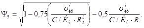
7.11. Максимальные суммарные продольные напряжения σнпр МПа определяются от всех (с учетом их сочетания) нормативных нагрузок и воздействий с учетом поперечных и продольных перемещений трубопровода в соответствии с правилами строительной механики.
При одновременном действии в трубопроводе внутреннего давления температурного перепада и упругого изгиба.
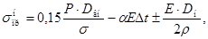
где: ρ - минимальный радиус упругого изгиба оси трубопровода, см. Остальные обозначения те же, что и в формулах (7.1), (7.6).
7.12. Подводный нефтегазопровод должен проверяться на устойчивость поперечного сечения трубы на воздействие гидростатического давления воды из условия:
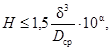
где: Нкр - высота столба воды от дна до поверхности воды, м
Dср - средний диаметр трубы.
7.13. При невыполнении условия (7.14) следует выбрать нефтегазопровод с большей толщиной стенки и повторить расчет.
7.14. Толщину стенок нефтегазопроводов следует назначать не менее 6 мм для нефтегазопроводов диаметром от 200 мм до 400 мм и не менее 10 мм для нефтегазопроводов диаметром 500 мм и более.
Таблица 3
|
Нагрузка и воздействия |
Коэффициент надежности по нагрузке |
||
|
обозначение |
величина |
||
|
Постоянные |
Масса нефтегазопровода с учетом изоляции и пригрузки |
0,9 |
|
|
Давление грунта |
П5 |
1,2 (0,8) |
|
|
Гидростатическое давление жидкости |
1,0 |
||
|
Выталкивающая (Архимедова) сила |
П6 |
1,0 |
|
|
Временные длительные |
Внутреннее давление в нефтегазопроводах транспортирующие газ, жидкие продукты, внутреннее давление в нефтегазопроводах транспортирующие газо-жидкие продукты |
П1 |
1,1 |
|
П2 |
0,95 |
||
|
Масса транспортируемого продукта |
0,95 |
||
|
Температурные воздействия |
П3 |
1,0 |
|
|
Воздействие неравномерных деформаций (посадки в результате подмыва и др.) |
П4 |
1,5 |
|
|
Кратковременные |
Волновая нагрузка и нагрузка от течения |
||
|
Горизонтальная составляющая |
1,0 |
||
|
Вертикальная составляющая |
1,05 |
||
|
Нагрузки и воздействия, возникающие при испытании нефтегазопроводов |
1,0 |
||
Примечание:
1. Значение коэффициента, указанного в скобках должно приниматься при расчете нефтегазопроводов, когда уменьшение нагрузки ухудшает условия работы последних.
2. Коэффициент надежности по внутреннему давление П1 равный 1,1 принимается при возможности повышения внутреннего давления в нефтегазопроводе не более 10 % и отсутствии пульсирующих воздействий. Когда по условиям эксплуатации нефтепроводов и продуктопроводов возможно кратковременное повышение давления до 15 % от рабочего, коэффициент перегрузки рабочего давления принимается 1,15.
При надлежащем обосновании расчетом коэффициент перегрузки рабочего давления может приниматься более 1,15.
Таблица 4
Таблица 5
|
Значение коэффициента надежности по назначению Кн |
|||
|
для газопроводов |
для нефтепроводов и нефтепродуктопроводов |
||
|
Р < 7,4 МПа (Р < 75 кгс/см2) |
7,4 < Р ≤ 9,8 МПа (75 < Р ≤ 100 кгс/см2) |
||
|
400 и менее |
1 |
1 |
1 |
|
500 - 600 |
1 |
1,05 |
1,05 |
|
700 - 800 |
1,06 |
1,1 |
1,1 |
7.15. Применяемые трубы должны отвечать требованиям, изложенным в разделе 12 настоящих норм.
7.16. Толщину стенки деталей нефтегазопроводов (отводов, днищ, переходников) d при воздействии расчетного рабочего давления следует определять согласно СНиП 2.05.06-85.
7.17. Проверка устойчивого состояния подводного нефтегазопровода сводится к определению массы (веса) пригрузки (П) в воде, обеспечивающей проектное положение нефтегазопровода при самой неблагоприятной комбинации нагрузок, стремящихся вывести его из проектного положения.
7.18. Вес пригрузки П, Н/м, расположенного на дне водоема нефтегазопровода следует определять из выражения:
П = С + А + Пи + Пп - Gтр, (7.15)
где: G - расчетный наименьший вес нефтегазопровода в воде, обеспечивающий устойчивое положение от воздействия волн и течений, определяется по (8.19)
А - выталкивающая сила воды, Н/м
Gтр - вес труб на воздухе, с учетом изоляции и футеровки, Н/м
Пи - расчетный вес пригрузки под водой, необходимой для изгиба нефтегазопровода по профилю дна моря, определяемый из условия прилегания нефтегазопровода ко дну моря (траншеи)
Пп - расчетный вес пригрузки под водой, необходимый для предотвращения подъема трубопровода на непрямолинейных участках в вертикальной плоскости под воздействием внутреннего давления.
Примечание. Пи, Пп определяется в соответствии с общими правилами строительной механики, путем разбивки упругой линии нефтегазопровода на участки с граничными условиями, диктуемыми профилем участка (участков дна).
7.19. При транспортировании по подводному газопроводу газа с отрицательной температурой необходимо учитывать обледенение газопровода на дополнительную плавучесть и увеличения размеров при расчете на устойчивость от воздействия.
7.20. Нагрузки от волн и течений на утяжеляющие грузы не учитываются, если расстояние между грузами в свету больше полуторной длины груза.
7.21. При пригрузке нефтегазопровода отдельными грузами, расстояние между которыми в свету меньше полуторной длины груза, расчет нагрузки на нефтегазопровод от волн и течений надлежит произвести повторно, приняв значение Dн, равным наружному диаметру груза. Если при этом пригрузка нефтегазопровода не обеспечивается, то величина пригрузки достигается применением грузов из материала большей плотности или увеличением толщины стенки груза.
8.1. Расчет элементов волн и волновых нагрузок на морские подводные нефтегазопроводы необходимо производить с учетом деления водоема на зоны по глубине согласно требованиям СНиП 2.06.04-82.
8.2. Обеспеченность расчетной высоты волны должна приниматься для магистральных нефтегазопроводов - 5 %, для ответвлений от магистральных нефтегазопроводов, промысловых нефтегазопроводов и нефтепродуктов беспричального налива и рейдовых причалов - 13 %.
8.3. В глубоководной зоне, где глубина моря больше половины средней длины волны (d > 0,5λ) подводные нефтегазопроводы на волновые нагрузки не рассчитываются.
8.4. В мелководной (0,5 ≥ d > dcч) прибойной (dcч ≥ d ≥ dсчи) зонах нагрузки от волн на расположенный на дне моря нефтегазопроводов, наружный диаметр которого с учетом покрытий удовлетворяет условиям Dн ≤ 0,1λ и Dн ≤ 0,1d, следует определять для двух случаев:
при максимальной горизонтально составляющей линейной нагрузки Рх: max и соответствующем значении вертикальной составляющей нагрузки P2
при максимальной вертикальной составляющей нагрузки Pz,max и соответствующем значении горизонтальной составляющей нагрузки Рх.
8.5. Максимальную горизонтальную Pх,max и соответствующую вертикальную Рz составляющие линейной нагрузки от волн на нефтегазопровод, расположенный в мелководной зоне, необходимо определять по формулам:
Рх, max = Pxi · dxi + ρxv · dxv (8.1)
Pz = 9/5ρxv · dxv (8.2)
где: Рxi и Рxv - соответственно инерционный и скоростной компоненты горизонтальной составляющей нагрузки, от волн (Кн/м) определяемые по формулам:
Рxi = ρgDн2Θxip (8.3)
Рxv = ρgDнhΘxvp, (8.4)
где: Θxip и Θxvp - коэффициенты линейной нагрузки от волн, значения которых определяется по графикам приложения 1.
dxi и dxv - коэффициент сочетания инерционного и скоростного компонентов линейной нагрузки от волн, принимаемые по графикам приложений 2, 3, 4 в зависимости от d/λ, λ/h и фазы волны σт соответствующей максимальной волновой нагрузки Рх, max определяемой по графикам приложения 5, в зависимости от d/λ и X = Pxi/Pxv.
8.6. Максимальную вертикальную Рz, max и соответствующую горизонтальную Рх составляющие линейной нагрузки от волн на нефтегазопровод, расположенный в мелководной зоне, необходимо принимать равным Pz, max = -1,8pw;
Рх = Рxv (8.5)
8.7. Максимальную горизонтальную Pz, max сч соответствующую вертикальную Pz, сч составляющие линейной нагрузки от волн на нефтегазопроводе, расположенном на дне в прибойной зоне (см. приложение 6) необходимо определять по формулам:
Рх, max сч = Pxi, сч · dxi, сч + Pxv, сч · dxv, сч (8.6)
Pz, сч = -1,8Pxv, сч · dxv, сч (8.7)
Рxi, сч = ρgDн2Θxi, сч (8.8)
Рxv, сч = ρgDtΘxv, сч (8.9)
В приведенных формулах значения
коэффициентов нагрузок Θxi, сч и
Θw, сч находятся по графикам приложения 7 в зависимости от параметра 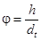
Коэффициента сочетания инерционного dxi сч и скоростного компонентов горизонтальной составлявшей нагрузки от волн необходимо определять по графикам приложения 9.
8.8. Максимальную вертикальную Pz max сч и соответствующую горизонтальную Рх, сч составляющие линейной нагрузки на нефтегазопровод, расположенный в прибойной зоне, необходимо принимать равными
Рz max сч = 1,8Pxv сч; Рx, сч = Pxv, сч (8.10)
8.9. Расчетные значения горизонтальной (боковой) Рхр и вертикальной (подъемной) Pzp составляющих нагрузок от волн и течений следует определять по формулам:
Pxp = Рx · Ксн · cos2φв + Pхт · cos2φт (8.11)
Рzp = Рz · Ксн · cos2φв + Pzт · cos2φт (8.12)
где: Рх и Рz - горизонтальная и вертикальная составляющие нагрузок от волн, определяются для двух случаев по формулам (8.1) и (8.2) и формулам (8.5) для мелководной зоны, и по формулам (8.6) и (8.7) и (8.10) для призабойной зоны.
Рхт и Рzт - горизонтальная и вертикальная составляющие нагрузок от воздействия на нефтепровод течения - следует определять по формулам:
Pxт = 0,6ρDнV2т (8.13)
Pzт = -0,6Px · T (8.14)
φв - угол между нормалью к оси нефтепровода и лучом набегающей волны;
φт - угол между нормалью к оси нефтегазопровода и направлением течения;
Vт - скорость придонного течения на расстоянии Д от дна, (м/сек)
Ксн - коэффициент снижения волновой нагрузки, учитывающей неодновременность действия волн, определяемый по табл. 6.
Таблица 6
|
Расстояние между опорами (фиксирующими точками) по трассе нефтегазопровода |
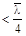 |
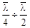 |
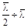 |
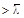 |
|
Ксн |
0,8 |
0,7 |
0,6 |
0,5 |
8.10. Наименьший вес, расположенного на дне водоема нефтегазопровода G (кн/м), обеспечивающий устойчивое положение от воздействия волн и течений в мелководной и прибойной зонах следует определять по формуле:
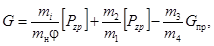
где: Gпр - вес транспортируемого по трубопроводу продукта, (кн/м)
П - коэффициент, характеризующий соприкосновение трубопровода с грунтом
f - коэффициент трения, принимаемый по табл. 7
mi - коэффициент перегрузки, принимаемый по табл. 3.
Таблица 7
|
Поверхностные грунты морского дна |
Коэффициенты |
|||
|
П |
φ |
1/mφ |
||
|
1. |
Скальные грунты |
1,15 |
0,65 |
1,35 |
|
2. |
Крупные пески |
1,25 |
0,55 |
1,45 |
|
3. |
Мелкие пески |
1,35 |
0,45 |
1,65 |
|
4. |
Илистые и суглинистые грунты |
1,45 |
0,40 |
1,75 |
9.1. Линии технологической связи входят в состав линейных сооружений магистральных нефтегазопроводов и служат для управления их работой.
9.2. Проектирование технологической связи магистральных нефтегазопроводов необходимо осуществлять в соответствии с требованиями утвержденных нормативных документов по проектированию линий связи и требованиями настоящего раздела.
9.3. Технологическая связь магистральных нефтегазопроводов должна обеспечивать:
диспетчерскую телефонную связь головных сооружений с сооружениями, расположенными по трассе нефтегазопровода и на берегу;
линейную связь головных, промежуточных и сооружений на берегу с ремонтными бригадами и их транспортными средствами;
оперативно-производственную телефонную и при необходимости телеграфную связь с управлением и с подчиненными службами;
связь сетевых совещаний объединения с основными эксплуатационными службами нефтегазопроводами;
местную телефонную связь промплощадок;
каналы передачи данных для центральной и линейной телемеханики;
каналы передачи данных для автоматизированных систем управления (АСУ).
9.4. Линии технологической связи следует предусматривать кабельными, радио-релейными и УКВ радиосвязи. Соединительные линии и местные линии связи следует предусматривать кабельными.
9.5. В систему диспетчерской связи все абоненты должны включаться параллельно.
9.6. Система оперативно-производственной связи, как правило, должна быть автоматической.
9.7. При проектировании устройств связи следует руководствоваться действующими правилами и нормативными документами Мингазпрома и Министерства связи СССР.
9.8. Количество каналов связи, необходимое для обеспечения технологической связи, следует принимать согласно табл. 8.
Таблица 8
|
№ пп. |
Наименование связей, каналов, цепей |
Количество каналов связи |
|
1. |
Диспетчерская телефонная связь головных сооружений с сооружениями, расположенными по трассе нефтегазопровода и на берегу |
1 |
|
2. |
Линейная связь головных, промежуточных и сооружений на берегу с ремонтными бригадами и их транспортными средствами |
1 |
|
3. |
Оперативно-производственная телефонная связь на участках |
|
|
а) Управление - головные сооружения |
2 |
|
|
б) Головные сооружения - смежные головные сооружения (при наличии последних) |
2 |
|
|
4. |
Телефонная связь управления с подчиненными ему службами |
1 |
|
5. |
Связь сетевых совещаний управления с основными эксплуатационными службами нефтегазопроводами |
1 |
|
6. |
Каналы передачи данных для центральной телемеханики |
2 (основной резерв) |
|
7. |
Каналы передачи данных для АСУ |
по одному от каждого объекта |
|
8. |
Канал связи для линейной телемеханики |
1 |
Примечание: При наличии АСУ канал телеграфной связи не предусматривается. Передача документальных сообщений осуществляется с использованием устройств АСУ.
9.9. Тип линии связи, тип системы передачи, количество систем передач и другие технические решения по устройствам связи.
9.10. Предоставление материалов для согласования строительства линий технологической связи и Мингазпрома с органами Министерства связи СССР следует осуществлять в соответствии с «Временной инструкцией о порядке согласования строительства сооружений электросвязи Министерства газовой промышленности с органами Министерства связи СССР и Межведомственными координационным советом по созданию ЕАСС страны», утвержденной Мингазпромом 12.10.1977 гг. действующим «Положением о порядке координации строительства сооружений электросвязи в стране».
9.11. Прокладку кабельных линий технологической связи следует предусматривать, как правило, с левой стороны нефтегазопровода от направления транспортирования продукта.
9.12. Расстояние между незаглубленным нефтегазопроводом и кабельной линией связи устанавливается проектом, но не менее 25 м.
9.13. Разрешается кабельную линию связи укладывать в одной траншее с нефтегазопроводом.
9.14. При прокладке кабельной линии связи по дну моря, представленного выходами скальных пород следует предусматривать мероприятия, предупреждающие кабель от повреждения.
9.15. Место выхода (подъема) кабеля связи на гидротехническое сооружение и способы его крепления определяются проектом.
9.16. Усилительные пункты технологической связи, узлы линейной арматуры и станции катодной защиты следует располагать с учетом удобств эксплуатации и размещения источников электропитания.
10.1. При проектировании противокоррозионной защиты наружной поверхности морских подводных нефтегазопроводов должен быть обеспечен безаварийный срок службы нефтегазопроводов не менее 20 лет при любом способе прокладки.
10.2. Морские подводные нефтегазопроводы должны быть защищены комплексно - защитным покрытием и катодной или протекторной защитой.
10.3. Противокоррозионное покрытие нефтегазопроводов, прокладываемых в южных морях следует принимать по п. 10.5, 10.6, 10.7, настоящего раздела и по ГОСТ 25812-83 полиэтиленом, наносимым на трубы в заводских условиях экструдированием или напылением по ГОСТ 16337-77 или ГОСТ 16338-77.
10.4. Противокоррозионное покрытие нефтегазопроводов, прокладываемых в замерзающих морях, как правило, следует принимать по ГОСТ 25812-83 полиэтиленом, наносимым на трубы в заводских условиях экструдированием или напылением по ГОСТ 16337-77 или ГОСТ 16338-77 с предохранением протовокоррозионного покрытия от механических повреждений по ОСТ 5166-80 при укладке нефтегазопровода методом наращивания с плавучих средств.
10.8. При совместной катодной защите параллельно проложенных нефтегазопроводов расстояние между ними не лимитируется.
10.9. В случаях пересечения подводных нефтегазопроводов должна быть обеспечена их совместная катодная или протекторная защита.
10.10. Защита противокоррозионного покрытия от механических повреждений устанавливается проектом, за исключением покрытия по п. 10.4.
11.1. При проектировании морских подводных нефтегазопроводов необходимо выполнять требования, изложенные в документах, приведенных в приложении 10, требования настоящего раздела и для береговых участков - СНиП 2.05.06-85.
11.2. Трасса магистрального нефтегазопровода должна, по возможности, обходить акватории рыбохозяйственного значения.
11.3. Технология прокладки должна обеспечивать надежное выполнение строительства нефтегазопровода.
11.4. Проектом должны предусматриваться противоштормовые мероприятия, на случай изменения состояния моря в процессе прокладки нефтегазопровода.
11.5. Порядок испытания нефтегазопровода на прочность и плотность и величины испытательных давлений должны быть указаны в проекте.
11.6. Выходы нефтегазопровода на гидротехническое сооружение и берег должны быть оборудованы отсекающей арматурой. Место установки арматуры определяется проектом.
11.7. При расчете продувочных свечей следует руководствоваться положением норм технологического проектирования.
11.8. Под уплотняющими элементами арматуры и фланцевыми соединениями на гидротехнических сооружениях должны предусматриваться поддоны для сбора возможных утечек нефтепродуктов.
11.9. Проектом должны предусматриваться мероприятия, обеспечивающие полное улавливание и удаление с гидротехнического сооружения и берегового участка утечек нефтепродуктов из устройств запуска и приема очистных поршней и разделителей.
11.10. В проекте следует предусматривать мероприятия, исключающие загрязнение окружающей среды при обустройстве и эксплуатации строительно-монтажной площадки.
11.11. В проекте должны быть предусмотрены мероприятия, направленные на восстановление и восполнение нарушенной экосистемы.
12.1. Материалы и изделия, применяемые для строительства морских подводных нефтегазопроводов, должны отвечать требованиям государственных стандартов технических условий, других нормативных документов, утвержденных в установленном порядке и требованиям настоящего раздела.
12.2. Трубы, соединительные детали и сварочные материалы должны отвечать требованиям СНиП 2.05.06-85.
12.3. Запрещается применение труб, материалов, оборудования, арматуры приборов, не имеющих сопроводительного документа (паспорта, сертификата), подтверждающего их соответствие требованиям государственных стандартов или технических условий, а также товарного знака (заводской марки) на изделия.
12.4. Для строительства стальных морских подводных нефтегазопроводов, как правило, должны применяться трубы, стальные из спокойных или полуспокойных углеродистых и низколегированных сталей диаметром до 400 мм и из спокойных и полуспокойных низколегированных сталей диаметром более 400 мм.
12.5. Применение спиральношовных труб не допускается.
12.6. Все сварные соединения труб должны пройти 100 % контроль.
12.7. В проекте должна быть дана полная характеристика применяемых труб (с указанием длины труб и формой раздела кромок).
12.8. Сварные соединительные детали на морских подводных нефтегазопроводах, как правило, применять не следует.
12.9. Конструкция запорной, регулирующей и предохранительной арматуры должна обеспечивать герметичность, соответствующую I классу по ГОСТ 9544-75.
12.10. Выбор сварочных материалов должен производиться с учетом прочностных свойств металла труб и применяемого метода сварки.
Материалы, применяемые для противокоррозионных покрытий подводных нефтегазопроводов.
12.11. Для противокоррозионных покрытий нефтегазопроводов следует применять материалы по ГОСТ и ТУ, приведенных в разделе 10 «Защита морских подводных нефтегазопроводов от коррозии».
Изделия для закрепления (пригрузки) нефтегазопроводов против всплытия и перемещения под действием волн и донных течений.
12.12. Для пригрузки нефтегазопровода должны предусматриваться утяжеляющие кольцевые одиночные грузы и сплошные монолитные или сборные утяжеляющие покрытия.
12.13. Изделия и покрытия, применяемые для утяжеления нефтегазопроводов, должны обладать химической и механической стойкостью по отношению к воздействию морской воды.
Примечание: Агрессивность морской воды и требования к защите бетонных грузов, сплошного монолитного или сборного железобетонного покрытия определяется в соответствии с требованиями СНиП 2.03.11-85.
12.14. Кольцевые одиночные утяжеляющие грузы, как правило, должны предусматриваться из железобетона в виде двух половин (с разъемом по диаметральной плоскости), скрепляемых между собой болтовым соединением (неразъемным).
12.15. Утяжелители сплошных сборных железобетонных покрытий должны предусматриваться из цилиндрических оболочек открытого профиля, скрепляемых между собой сваркой закладных элементов.
12.16. Сплошное монолитное покрытие, как правило, предусматривается из армированного бетона и может быть выполнено способом набрасывания, торкетирования, бетонирования в опалубке и вибропроката.
12.17. Каждое изделие для пригрузки нефтегазопровода должно маркироваться масляной краской с указанием фактической массы и объема изделия.
12.18. Каждая труба с нанесением утяжеляющим покрытием должна маркироваться масляной краской с указанием массы изделия и средней длины наружной окружности покрытия.
12.19. Изделия из железобетона для пригрузки нефтегазопроводов, как правило, следует изготавливать из тяжелых бетонов с рудосодержащими заполнителями.
12.20. Класс и марка бетона устанавливается проектом, исходя из условий прокладки и эксплуатации нефтегазопровода. Класс не ниже В30.
Прочность бетона к моменту прокладки нефтегазопровода должна составлять 100 % прочности установленного класса.
12.21. Водонасыщение бетона или другого используемого материала не должно увеличивать массу прокладываемого нефтегазопровода выше установленной проектной величины.
12.22. Номинальная масса утяжеляющего бетонного груза определяется проектом.
13.1. Способ сварки подводных нефтегазопроводов, форма и требования к разделу кромок труб под сварку, конструкция сварных швов, марка электродов и других сварочных материалов должна быть указана в проекте.
13.2. Разделка кромок труб под дуговую сварку, должна соответствовать требованиям ГОСТ 16036-80.
В случае разностенных труб одного и того же диаметра или труб и соединительных деталей, арматуры, подготовка кромок должна соответствовать требованиям СНиП III-42-80.
13.3. Необходимость термообработки сварных соединений должна определяться проектом.
13.4. В проекте следует предусмотреть мероприятия, устраняющие влияние низкой температуры на сварку нефтегазопроводов в зимних условиях.
13.5. Электроды, проволоку и флюс для работы в зимних условиях необходимо выбирать с таким расчетом, чтобы повысить раскислительную способность шлаков и газов.
13.6. Разделка концов соединительных деталей и арматуры должна удовлетворять условиям сварки и требованиям действующих нормалей.
13.7. Контроль качества всех сварных стыков, выполненных дуговыми методами сварки, следует предусматривать радиографическим методом.
Обязательное
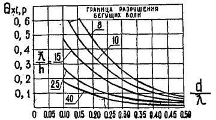
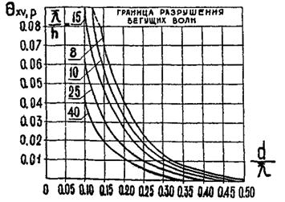
Обязательное
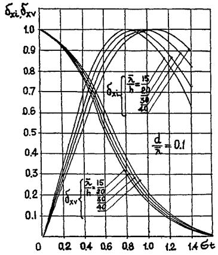
Обязательное
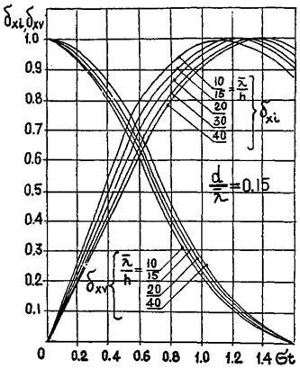
Обязательное
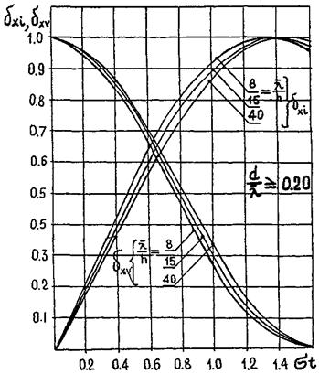
Обязательное
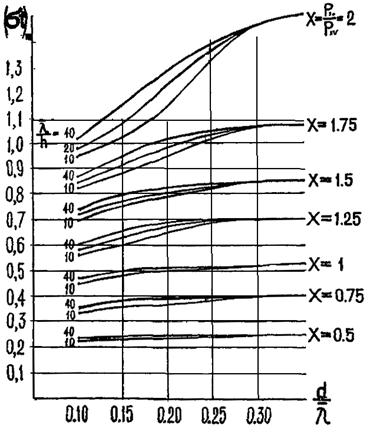
Обязательное
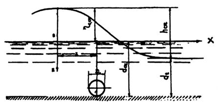
d - глубина воды под подошвой волны (М) принимая равной: dt = d(hсч - ηс, сч)
hсч - высота волн в прибойной зоне (м) при первом обрушении
ηс, сч - превышение над расчетным уровнем вершины волн при первом обрушении
dсч - критическая глубина воды, при которой происходит 1-е обрушение волн
dсч, ч - глубина воды, при которой происходит последнее обрушение волн
Обязательное
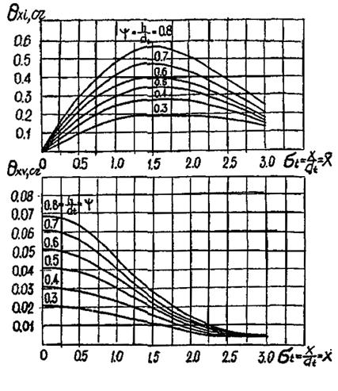
Обязательное
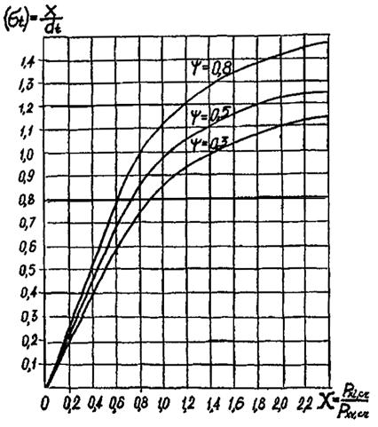
Обязательное
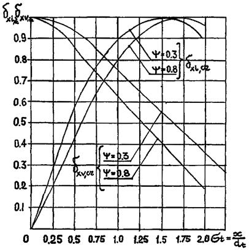
Справочное
- Основы водного законодательства Союза ССР.
- Постановление Президиума Верховного Совета СССР № 4165-УП от 13 августа 1969 г. «О применении Указа Президиума Верховного Совета СССР о континентальном шельфе Союза СССР».
- Постановление Совета Министров СССР № 564 от 18 июля 1969 г. «О порядке проведения работ на континентальном шельфе СССР и охрана его собственных богатств».
- Постановление Центрального Комитета КПСС и Совета Министров СССР от 1 декабря 1978 г. № 984 «О дальнейших мерах по усилению охраны природы и улучшению использования природных ресурсов».
- Положение об охране рыбных запасов и регулирования рыболовства в водоемах СССР, утвержденное Постановлением Совета Министров СССР от 15 сентября 1958 г.
- Постановление Совета Министров СССР от 25 октября 1974 г. № 838 «Об усилении охраны запасов ценных видов рыб, морских млекопитающих и водных беспозвоночных в рыбохозяйственных водоемах СССР».
- Постановление Совета Министров СССР от 5 апреля 1978 г. «О возмещении убытков, причиненных проведением водохозяйственных мероприятий, прекращением или изменением условий водоиспользования».
- Правила охраны поверхности вод от загрязнения сточными водами» Минздрав СССР 1975 г.
ГОСТ 17.1.3.10-83 Охрана природы. Гидросфера. Общие требования к охране поверхностных и подземных вод от загрязнения нефтью и нефтепродуктами при транспортировании по трубопроводу.
ГОСТ 17.1.3.05-82 Охрана природы. Гидросфера. Общие требования к охране поверхностных и подземных вод от загрязнения нефтью и нефтепродуктами.
ОСТ 51.82-82 Охрана природы. Правила охраны окружающей среды, при сборе, подготовке и транспортировке продукции скважин на морских нефтегазовых месторождениях.
СОДЕРЖАНИЕ